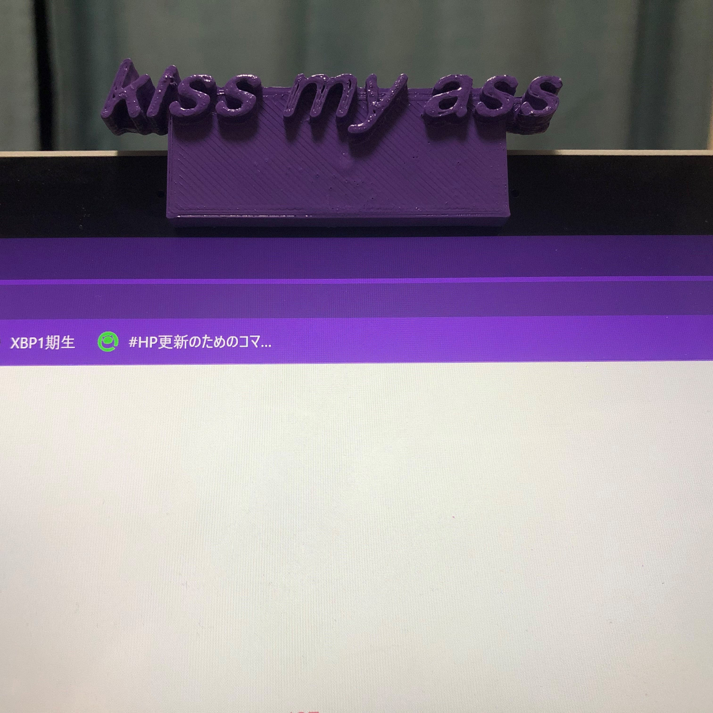
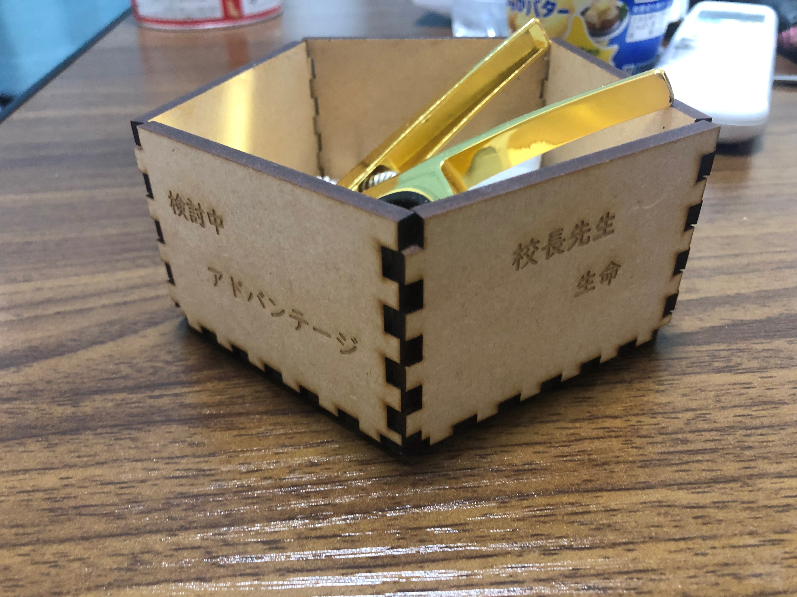
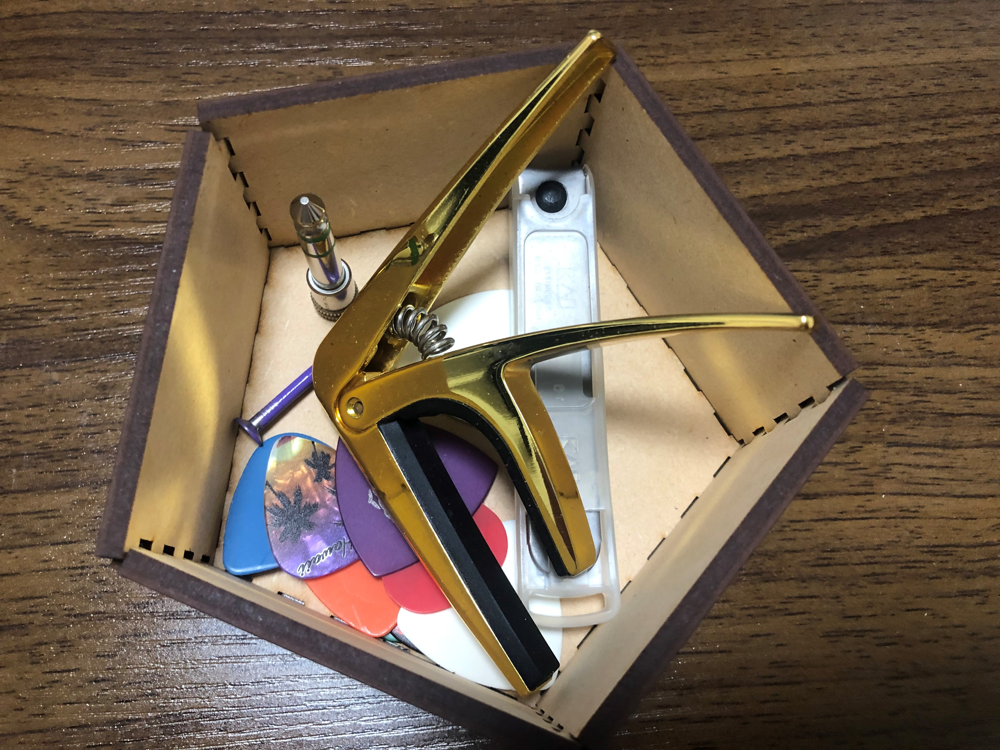

デジタルファブリケーション 第2回Assignment
202101761 岡本翔馬
1.作品名 : 小物入れ（ダサい刻印つき）
2.構想段階のスケッチ

3.実際に作成した作品
 
4.作品の設計
5.作品の説明
- 五角形の箱に適当な文字を入れ小物入れと表したもの
- もともとはギターピックを入れるために作っていたがややサイズが大きいためなんでも入る
- 言葉に意味はない。ダサさを求めた
6.なぜこの作品を作ろうという想いに至ったか
- あまりいい発想がなかったため箱をつくるサイトを使用し作成した。
オリジナリティをつけたかったがために文字を入れた（特に漢字を入れたかった）
7.制作プロセスの中で調べたこと